Overview
webplotviz() creates a static food web diagram from an
Rpath object. Nodes represent functional groups and fleets;
node size reflects biomass and edges represent predator–prey
interactions and fishing pressure. The y-axis is fixed to trophic
level.
Basic usage — Anchovy Bay
AB.params is a small fictional ecosystem included in the
Rpath package. It is a good starting point because it
renders quickly.
# Build the Rpath balanced model
Rpath.obj <- rpath(AB.params, eco.name = "Anchovy Bay")
# Plot with default settings
webplotviz(Rpath.obj)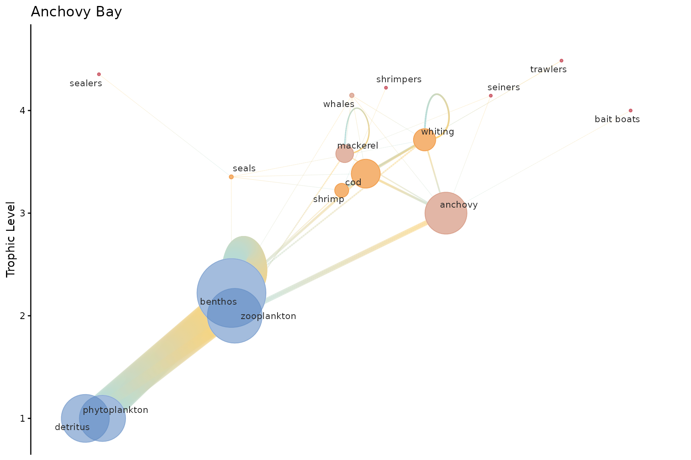
Customizing node size and spacing
Use h_spacing to spread nodes horizontally and
node_size_min / node_size_max to control the
range of node sizes.
webplotviz(
Rpath.obj,
h_spacing = 5,
node_size_min = 2,
node_size_max = 20,
text_size = 4
)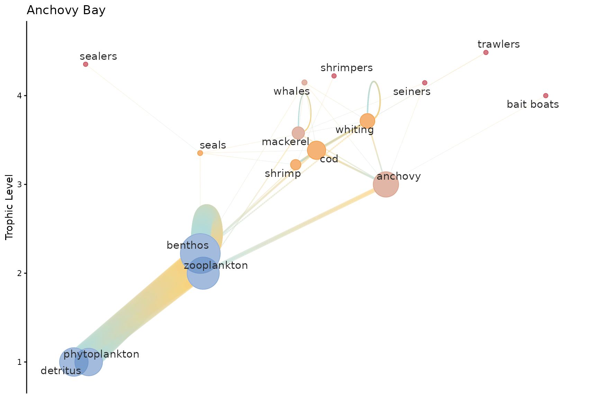
Use low_tl_spread to add spacing to lower trophic level
nodes.
webplotviz(
Rpath.obj,
h_spacing = 5,
low_tl_spread = 3,
node_size_min = 2,
node_size_max = 20,
text_size = 4
)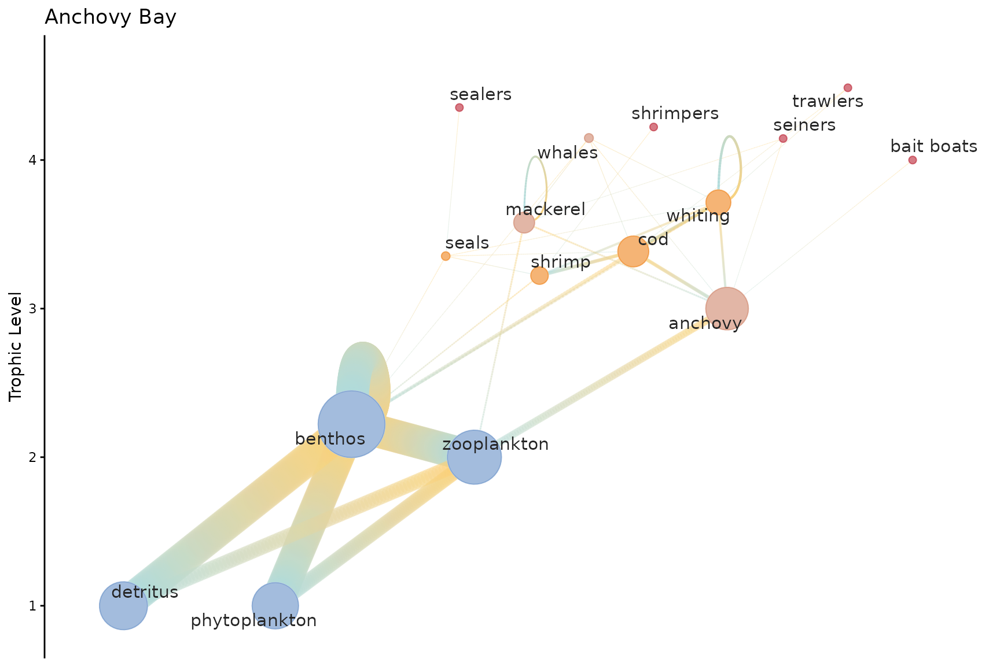
Changing color palettes
Two built-in palettes are available: "rpath_pal_dark"
(default) and "rpath_pal_light". You can also supply a
custom vector of hex colors.
webplotviz(Rpath.obj, groups_palette = "rpath_pal_light")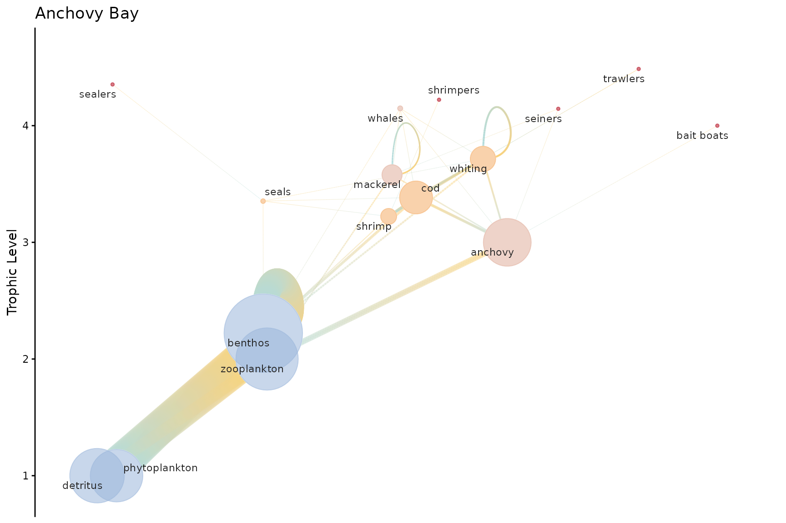
webplotviz(
Rpath.obj,
groups_palette = c("#264653", "#2a9d8f", "#e9c46a", "#f4a261", "#e76f51"),
fleet_color = "#023e8a"
)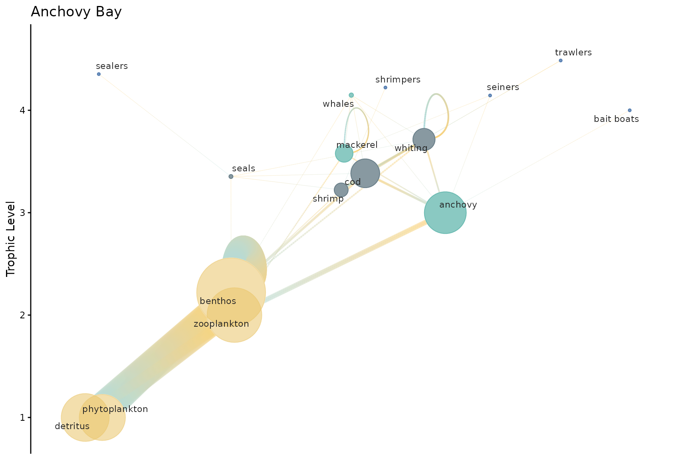
Rendering options — labels and
gradient
Two parameters control the visual style and rendering speed of the plot.
labels (default TRUE)
draws group name labels using ggrepel to avoid overlap.
Label placement is the largest single rendering cost — on a 54-group
model it accounts for roughly half the total render time. Set
labels = FALSE when you want a fast preview or a clean
export that you’ll annotate separately.
gradient (default FALSE)
draws each edge with a prey-to-predator colour gradient instead of a
fixed line.col colour. It adds a visual cue for interaction
direction but has a modest render cost.
# labels = FALSE: fastest render, useful for large-web previews
webplotviz(Rpath.obj, labels = FALSE)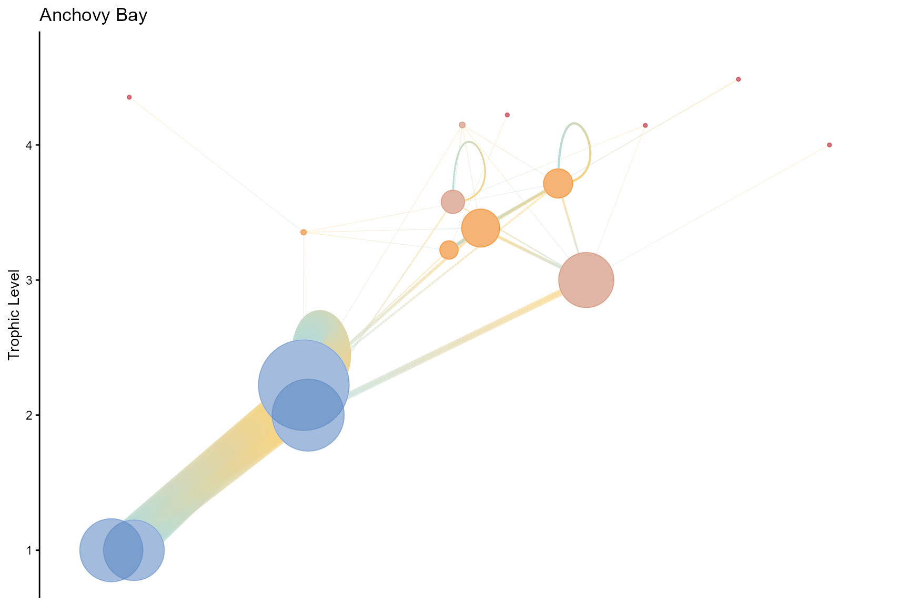
# gradient = TRUE: prey–predator colour gradient on edges
webplotviz(Rpath.obj, gradient = FALSE)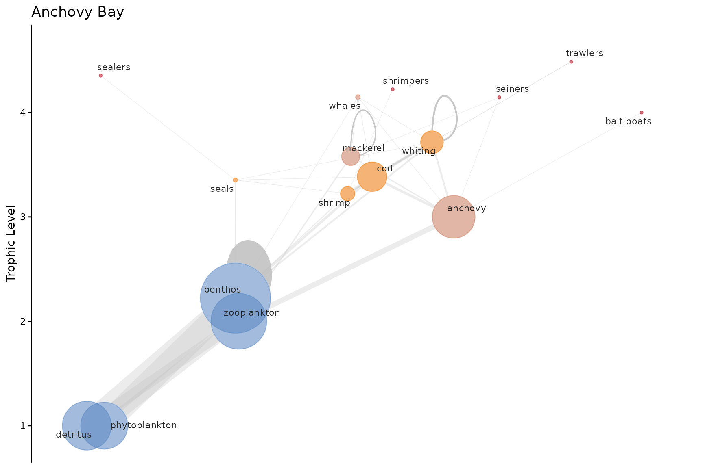
Node colouring — community detection methods
Nodes are coloured by community membership, detected with igraph’s
community detection algorithms. The cluster_method
parameter accepts four options:
| Method | Speed | Notes |
|---|---|---|
"fast_greedy" (default) |
Fast | Good general-purpose choice for food webs |
"louvain" |
Fast | Often produces tighter communities |
"walktrap" |
Moderate | Random-walk based; works on directed graphs |
"edge_betweenness" |
Slow | Most accurate; not recommended for large webs |
webplotviz(Rpath.obj, cluster_method = "fast_greedy", labels = FALSE) +
ggplot2::ggtitle("fast_greedy (default)")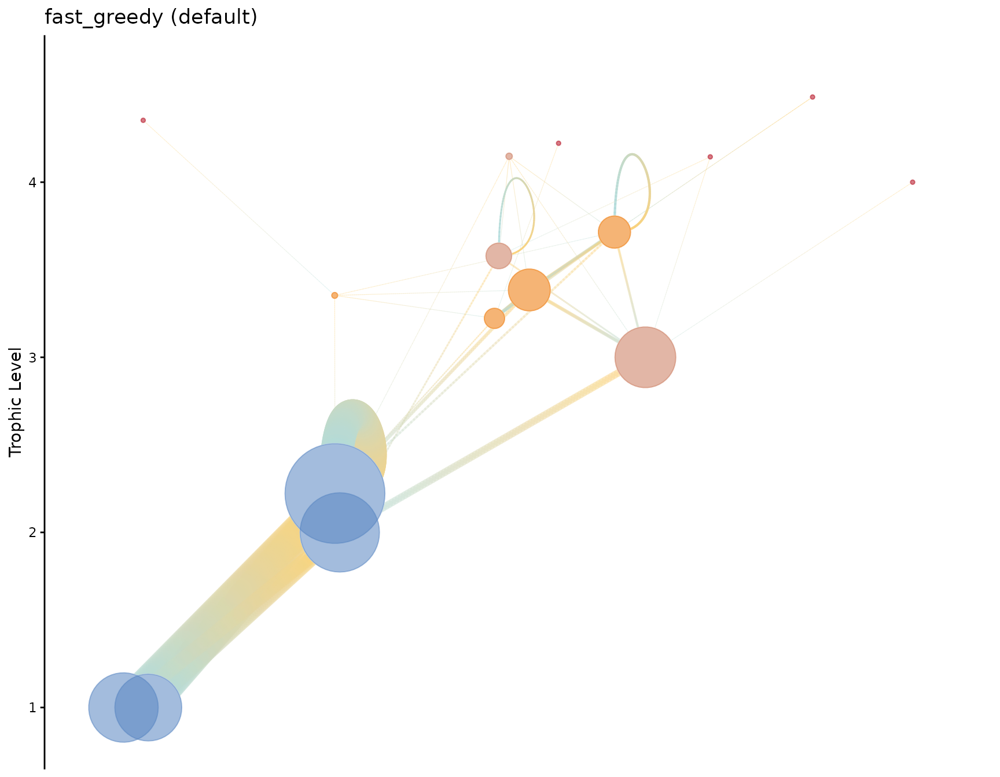
webplotviz(Rpath.obj, cluster_method = "louvain", labels = FALSE) +
ggplot2::ggtitle("louvain")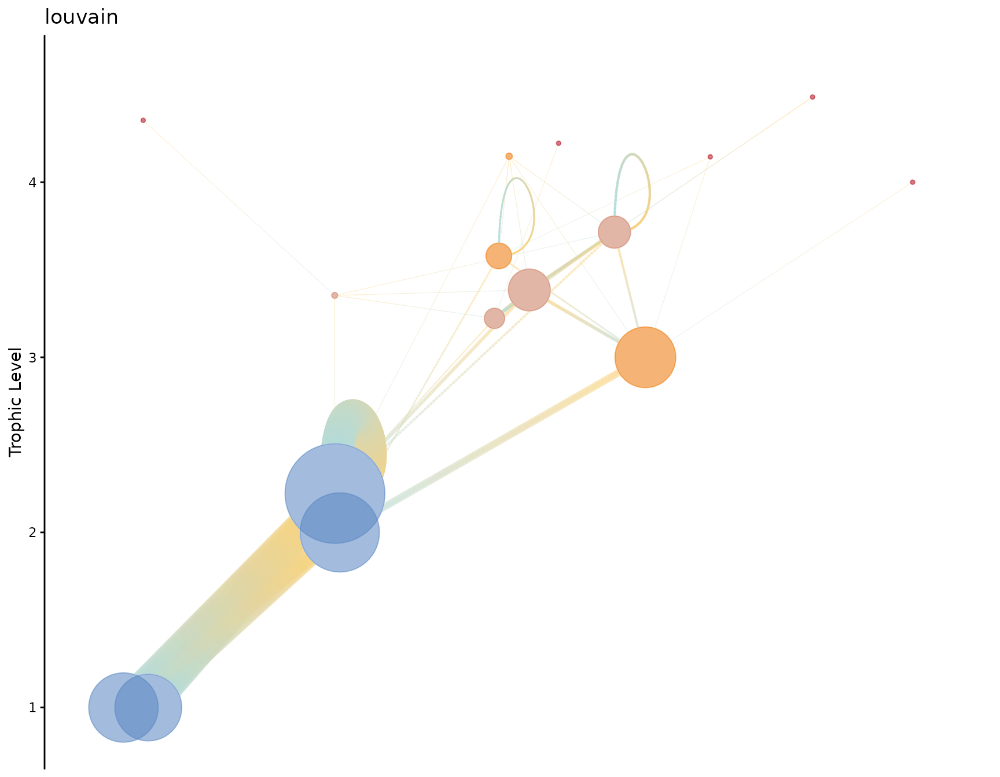
webplotviz(Rpath.obj, cluster_method = "walktrap", labels = FALSE) +
ggplot2::ggtitle("walktrap")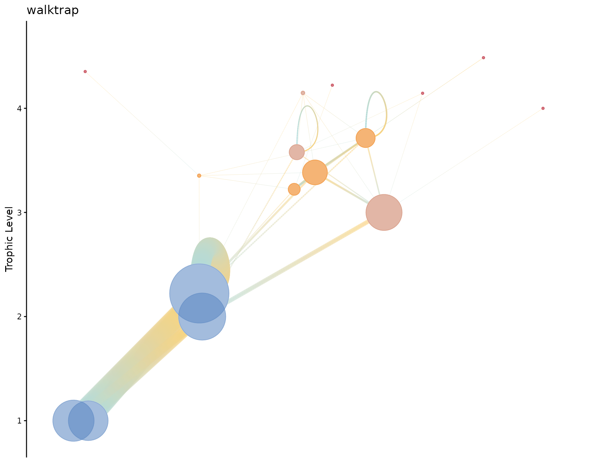
Large food web — Eastern Bering Sea
For food webs with more than 20 functional groups, plotting takes longer. The recommended workflow is to:
- Use
labels = FALSEto avoid the ggrepel label-placement cost. -
Assign the plot to an object and save it with
ggplot2::ggsave()rather than rendering it inline.
# Build the Eastern Bering Sea model
EBS.obj <- rpath(Ecosense.EBS, eco.name = "Eastern Bering Sea")
EBS.plot <- webplotviz(
EBS.obj,
h_spacing = 3,
low_tl_spread = 3,
text_size = 2.5,
node_size_min = 2,
node_size_max = 30,
labels = FALSE
)
#> Your food web object has more than 20 functional groups.
#>
#> Plotting to the RStudio window will take a while, please be patient...
#> Refer to the examples for large food webs.
EBS.plot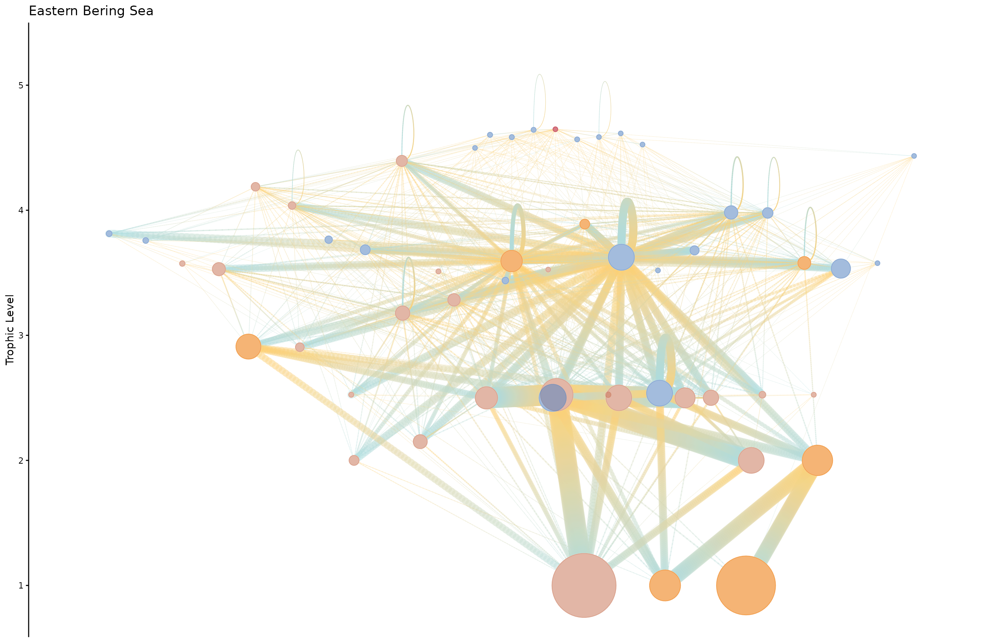
To save a high-resolution version:
ggplot2::ggsave(
"EBS_foodweb.png",
EBS.plot,
width = 16,
height = 10,
dpi = 300
)